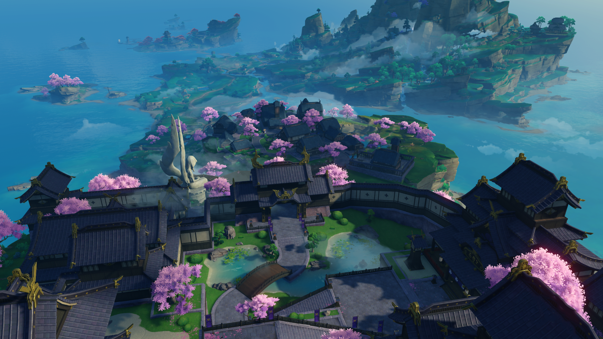
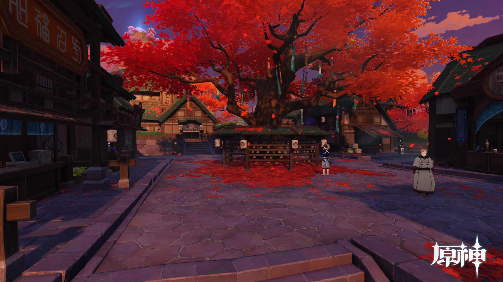
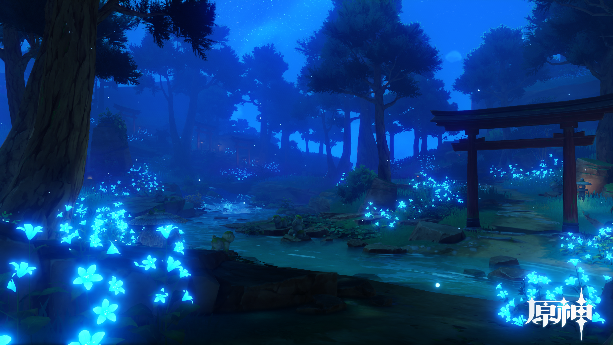

稻妻最为繁华热闹的城区，稻妻人大多居住生活在此。 从花见坂到町街，可顺着地势一路向上，游览当地传统的老店，品尝稻妻特色的美食。
天领奉行府也位于城中，管理民众治安与幕府军备等事务。
在稻妻城至高之处，雷电将军高居天守，凌于众生之上。
在锁国令期间，若想真正踏上鸣神的领土，就必须先通过离岛这道关卡。
离岛由勘定奉行管辖，人们必须持有各类凭证才可出入此地， 而这些凭证往往需要复杂的手续和一些特殊的关系才能办下。
如果不能顺利拿到凭证的话，就只能在离岛短暂驻足， 与滞留此地的其他外人一起，略观红枫青瓦与萧条渔村的一景了。
随处可见的狸猫石像、隐于林间的错落鸟居、 暗藏深处的遗落神龛…如同涓涓溪流，讲述着流淌在时光中的传说。
听说行走在镇守之森中，还能偶遇对人作怪的神秘生灵…
